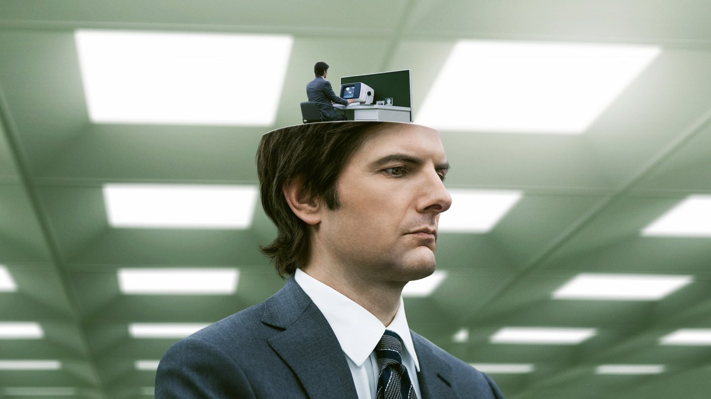
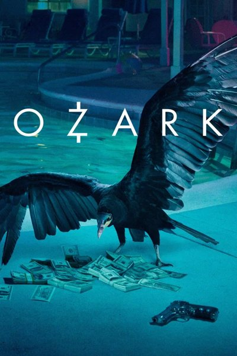
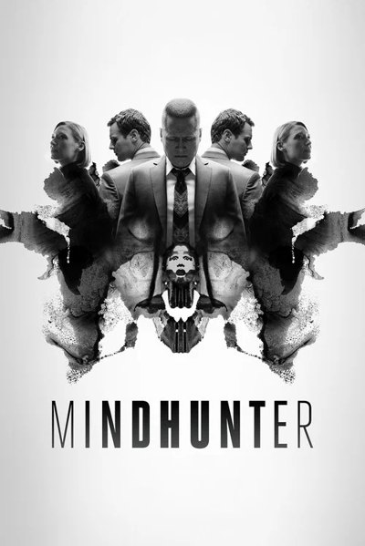
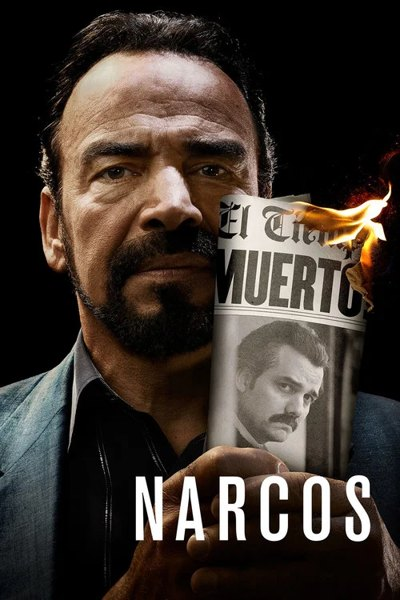
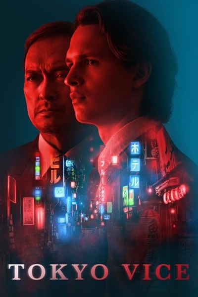
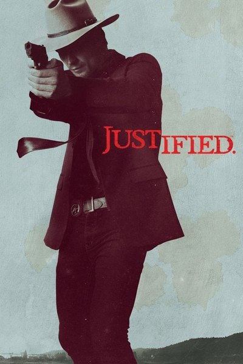
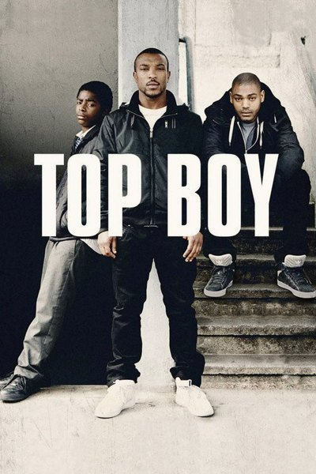
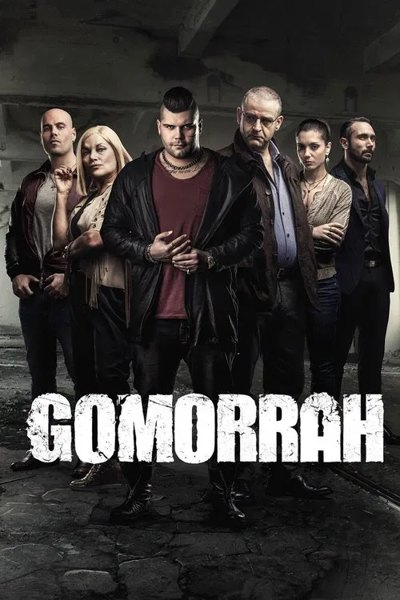
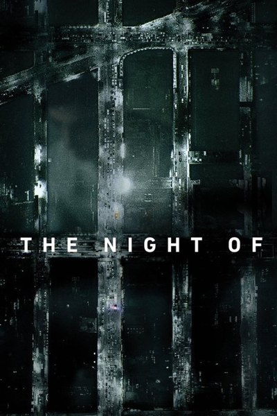

Search or jump to anythingCtrlK
B
Home
Live
NBA
Movies
Series
Saved
B
BirgirAccount
Series·Thriller · Sci-fi · Drama·Apple TV+
Mark leads a team of office workers whose memories have been surgically divided between their work and personal lives. When a mysterious colleague appears outside of work, it begins a journey to discover the truth about their jobs.
Created by Dan Erickson · Adam Scott, Britt Lower, Zach Cherry, John Turturro, Tramell Tillman, Patricia Arquette
Resume S2 · E3SavedIcelandicCopies · best of 3
4K HDR, 5.1 · best of 3 copies · from Northlight · Icelandic subtitles found · plays in mpv
Season 1Season 210 episodes · 7 left
1
Hello, Ms. Cobel58 minMark returns to work after a bereavement; a new hire refuses to settle in.
2
Goodbye, Mrs. Selvig56 minHelly goes to extremes to resign. Devon and Ricken host a gathering.
3
Who Is Alive?21 min leftMark, Helly, Irving and Dylan search for answers.
4
Woe’s Hollow55 minThe team takes an outdoor retreat and learns of Kier’s twin.
5
Trojan’s Horse49 minMark looks for help beyond the severed floor.
More like thisSame kind of thing · Thriller · Drama







